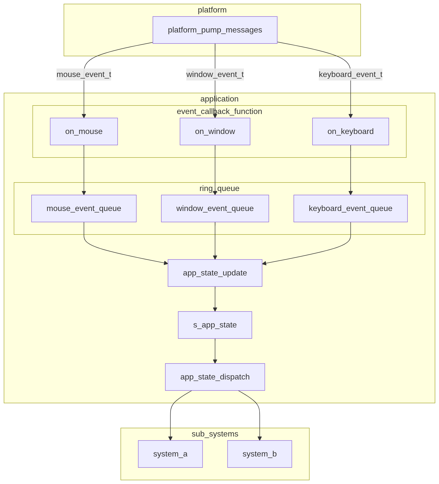

|
GL CHOCO ENGINE
|
|
GL CHOCO ENGINE
|
This page provides the following to help engine developers operate the event system safely:
The event system is executed in application_run() in application.c as follows:
platform_pump_messages().application.c to platform_pump_messages().app_state_update() consumes events from the ring queues and updates the state variables managed in s_app_state.s_app_state are dispatched to each subsystem.s_app_state are cleared (the state variable values themselves are retained).Event callbacks are responsible only for enqueuing events into ring queues and must not perform event handling. All event handling is performed in a centralized manner by app_state_update(). This allows app_state_update() to aggregate events into a state representation, so even if the same kind of event occurs multiple times within a single frame, only the final state needs to be applied (e.g., mouse movement).
Note that the ring queue implementation discards the oldest data when it becomes full. Therefore, events that must never be dropped are handled without going through a ring queue. At present, the only must-not-drop event is the window close event. However, additional events may be added in the future if they affect the control flow of application_run().
These steps are executed every frame. The simplified logic can be expressed as follows. (The following is pseudocode; error handling, arguments, and non-event-related code are omitted.)

When adding an event, you must first evaluate the nature of the event. The key question is: Does this event affect the control flow of application_run()?
If it does (e.g., a window close event), refer to Guidelines for Adding Must-Not-Drop Events. Otherwise, refer to Guidelines for Adding Normal Events.
A normal event is an event for which the application control flow does not break even if events are dropped (oldest discarded when the queue is full).
There are two types of normal event additions:
Because the required steps differ, each procedure is described below.
engine/include/core/event based on the target event category).engine/src/platform/platform_concretes/:platform_snapshot_collect(): collect event informationplatform_snapshot_process(): convert collected events into event-struct form and pass them to the application layer via event callbacksapp_state_update() (pop from the queue and convert into a state change representation such as flags/deltas).app_state_dispatch().app_state_clean().As long as the normal event addition stays within the existing event categories (keyboard/mouse/window), no changes to the event callback functions are required.
engine/include/core/event.xxx_event_code_t)xxx_event_args_t)xxx_event_t)xxx_event_t must contain xxx_event_code_t and xxx_event_args_t as membersapp_state_t in application.c.application_create() in application.c, add code to create/initialize the newly added ring queue.application.c, add a new callback function and implement pushing the event into the ring queue.engine/src/platform/platform_concretes/:platform_pump_messages()platform_snapshot_collect(): collect event informationplatform_snapshot_process(): convert collected events into event-struct form and pass them to the application layer via event callbacksapp_state_update() (pop from the queue and convert into a state change representation such as flags/deltas).app_state_dispatch().app_state_clean().For must-not-drop events, processing is not performed via event codes or callback functions. Instead, the event is handled by the return value of platform_pump_messages().
The steps to add this type of event are:
platform_result_t in engine/include/platform/platform_core/platform_types.h.engine/src/platform/platform_concretes/:platform_snapshot_collect(): collect event informationplatform_snapshot_process(): if a must-not-drop event is detected among the collected events, return it as the function resultplatform_pump_messages(): if the return value from platform_snapshot_process() indicates a must-not-drop event, return it as the result of platform_pump_messages()application_run() in application.c, add handling for the must-not-drop event based on the return value of platform_pump_messages().Note that return-value-based handling cannot process all must-not-drop events if multiple such events occur at the same time. If such a case becomes possible, the input/output specification of platform_pump_messages() will be revised.